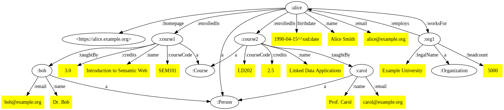
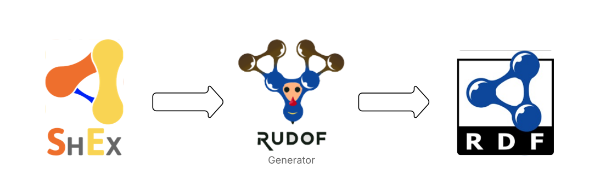

Índice
1. Introducción
Fundamentos de RDF, ShEx y generación de datos
¿Qué es RDF?
RDF (Resource Description Framework) es un estándar del W3C para describir recursos en la web de manera estructurada.
Los datos RDF se representan como tripletas:
<subject> <predicate> <object>Ejemplo:
:Alice :email "alice@example.org" .Esto significa: "Alice tiene un email que es alice@example.org"
Ejemplo Completo RDF
@prefix : <http://example.org/> .
@prefix xsd: <http://www.w3.org/2001/XMLSchema#> .
:alice a :Person ;
:name "Alice Smith" ;
:birthdate "1990-04-15"^^xsd:date ;
:email "alice@example.org" ;
:homepage <https://alice.example.org> ;
:worksFor :org1 ;
:enrolledIn :course1, :course2 .
:org1 a :Organization ;
:legalName "Example University" ;
:headcount 5000 ;
:employs :alice .
:course1 a :Course ;
:name "Introduction to Semantic Web" ;
:courseCode "SEM101" ;
:credits "3.0"^^xsd:decimal ;
:taughtBy :bob .
:course2 a :Course ;
:name "Linked Data Applications" ;
:courseCode "LD202" ;
:credits "2.5"^^xsd:decimal ;
:taughtBy :carol .
:bob a :Person ;
:name "Dr. Bob" ;
:email "bob@example.org" .
:carol a :Person ;
:name "Prof. Carol" ;
:email "carol@example.org" .Visualización del Grafo RDF
¿Qué es ShEx (Shape Expressions)?
Es un lenguaje para validar la estructura de datos RDF.
prefix : <http://example.org/>
prefix xsd: <http://www.w3.org/2001/XMLSchema#>
:Person {
:name xsd:string ;
:birthdate xsd:date ? ;
:email xsd:string + ;
:homepage xsd:anyURI ? ;
:worksFor @:Organization ? ;
:enrolledIn @:Course *
}
:Course {
:name xsd:string ;
:courseCode xsd:string {1} ;
:credits xsd:decimal ;
:taughtBy @:Person {1,5}
}
:Organization {
:legalName xsd:string ;
:department @:Organization * ;
:headcount xsd:integer ? ;
:employs @:Person *
}¿Qué hace el generador de RDF?
2. Estado del Arte
Análisis de herramientas y enfoques existentes
Partiendo de Datos Existentes
Referencia: Gottschalk, S., & Demidova, E. (2022). Tab2KG: Semantic table interpretation with lightweight semantic profiles. Semantic Web, DOI: 10.3233/SW-222993
Referencia: Gottschalk, S., & Demidova, E. (2022). Tab2KG: Semantic table interpretation with lightweight semantic profiles. Semantic Web, DOI: 10.3233/SW-222993
Dominio Específico
- Lehigh University Benchmark (LUBM) - Ontología de Universidades
- Berlin SPARQL Benchmark (BSBM) - Ontología de Comercio Electrónico
- PoDiGG - Pensado para el dominio de información geoespacial
LUBM - Ontología Universitaria
<?xml version="1.0"?>
<rdf:RDF xmlns="http://www.lehigh.edu/~zhp2/2004/0401/univ-bench.owl#"
xml:base="http://www.lehigh.edu/~zhp2/2004/0401/univ-bench.owl"
xmlns:rdf="http://www.w3.org/1999/02/22-rdf-syntax-ns#"
xmlns:rdfs="http://www.w3.org/2000/01/rdf-schema#"
xmlns:owl="http://www.w3.org/2002/07/owl#"
xmlns:xsd="http://www.w3.org/2001/XMLSchema#">
<owl:Ontology rdf:about="http://www.lehigh.edu/~zhp2/2004/0401/univ-bench.owl"/>
<!-- Classes -->
<owl:Class rdf:ID="Professor"/>
<owl:Class rdf:ID="FullProfessor">
<rdfs:subClassOf rdf:resource="#Professor"/>
</owl:Class>
<owl:Class rdf:ID="AssociateProfessor">
<rdfs:subClassOf rdf:resource="#Professor"/>
</owl:Class>
<owl:Class rdf:ID="Student"/>
<owl:Class rdf:ID="GraduateStudent">
<rdfs:subClassOf rdf:resource="#Student"/>
</owl:Class>
<owl:Class rdf:ID="Course"/>
<owl:Class rdf:ID="Department"/>
<owl:Class rdf:ID="University"/>
<!-- Object Properties -->
<owl:ObjectProperty rdf:ID="takesCourse">
<rdfs:domain rdf:resource="#Student"/>
<rdfs:range rdf:resource="#Course"/>
</owl:ObjectProperty>
<owl:ObjectProperty rdf:ID="teaches">
<rdfs:domain rdf:resource="#Professor"/>
<rdfs:range rdf:resource="#Course"/>
</owl:ObjectProperty>
<owl:ObjectProperty rdf:ID="worksFor">
<rdfs:domain rdf:resource="#Employee"/>
<rdfs:range rdf:resource="#Department"/>
</owl:ObjectProperty>
</rdf:RDF>Con un modelado de datos
- Con DSL (Domain Specific Language): GRR (Graph Randomizer and Rewriter)
- Con ontologías: GAIA
- Con lenguajes de validación (ShEx & SHACL): RDFGraphGen
RDFGraphGen
Referencia: Jovanovic, M., Vecovska, M., Jakubowski, M., & Hose, K. (2024). RDFGraphGen: An RDF Graph Generator based on SHACL Shapes. arXiv preprint, arXiv:2407.17941
Comparación de Lenguajes de Validación

3. Algoritmo
Proceso de generación de datos RDF paso a paso
Paso 1: Crear un grafo de dependencias

Paso 2: Generar entidades sin relaciones individuales

Paso 3: Generar relaciones entre los nodos

Paso 4: Serialización
- El grafo resultante se serializa en formato RDF utilizando el formato Turtle
- Hay un cuello de botella que se puede parametrizar
- Esto nos permite que en un futuro se pueda enviar datos a un endpoint SPARQL, en vez de un archivo
4. Resultados
Evaluación del rendimiento y calidad
5. Trabajo Futuro
Oportunidades de mejora y extensión
Mejoras
- Paralelización de operaciones
- Optimización de memoria y manejo de grafos grandes
- Integración con otras herramientas
- Generación basada en IA generativa
¡Gracias!
¿Preguntas?
Jose Emilio Labra Gayo
Por su dirección, apoyo y guía constante